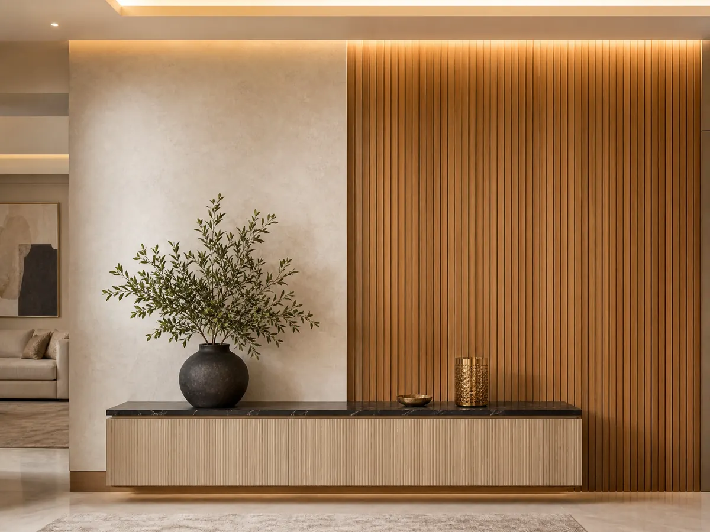

5 أفكار لمنزل مميز مع مقاول دهانات وديكورات الرياض 053 116 9312
مقاول دهانات وديكورات الرياض هو ما يبحث عنه أصحاب المنازل عند الرغبة في تغيير شكل المساحات الداخلية وإضافة لمسات تجمع بين الأناقة والراحة، فربما تحتاج إلى تجديد جدران غرفة المعيشة، أو تطوير السقف، أو اختيار خامات تجعل منزلك أكثر تميز، لكن الوصول إلى النتيجة التي تحلم بها يبدأ من تحديد احتياجات المكان واختيار التفاصيل التي تتناسب مع ذوقك وميزانيتك.
ومع تعدد خيارات التشطيبات والديكورات، يصبح من المهم التعامل مع جهة تفهم طبيعة المساحة وتساعدك على استكشاف الحلول المناسبة، وتقدم ديكورات الأحلام خدمات متنوعة في الديكور الداخلي بالرياض، تشمل الجبس بورد وبديل الرخام وورق الجدران والباركيه والتكسيات الخشبية والشيبورد، ويمكنك التواصل مع الشركة للتعرف على الخيارات المتاحة ومناقشة فكرتك قبل اتخاذ قرار التجديد.
مقاول دهانات وديكورات الرياض
تخيل أن تدخل منزلك فتجد الألوان متناسقة والجدران أكثر جاذبية والتفاصيل متكاملة مع الأثاث، فالتجديد الناجح لا يحتاج دائمًا إلى تغيير كل شيء، بل إلى اختيا مقاول دهانات وديكورات الرياض
متميز لاختيار العناصر التي تحدث فرق حقيقي في شكل المكان، ولهذا ابدأ بتحديد أولوياتك:
- تجديد الجدران: حدد ما إذا كنت تحتاج إلى تغيير اللون أو إضافة خامة ديكورية تمنح الجدار مظهرًا مختلفًا.
- تطوير الأسقف: يمكن أن تضيف تصاميم الجبس بورد تفاصيل عصرية تتناسب مع الإضاءة وطبيعة الغرفة.
- تنسيق الألوان: اختر درجات تتوافق مع الأثاث والأرضيات، حتى لا يبدو كل عنصر منفصلًا عن التصميم العام.
- إضافة خامات مميزة: يمكن استخدام ورق الجدران أو التكسيات الخشبية لإبراز مساحة معينة بطريقة أنيقة.
- تحديد الميزانية: ابدأ بالعناصر الأكثر أهمية بالنسبة لك، ثم قارن الخيارات التي تحقق الشكل المطلوب ضمن المبلغ المتاح.
- التأكد من نطاق الخدمة: قبل الاتفاق مع أي جهة، اسأل عن الخدمات التي تنفذها فعلًا، لأن الديكور الداخلي لا يعني بالضرورة تقديم أعمال الدهانات أو الترميم العام.
عند البحث عن مقاول دهانات وديكورات الرياض، من الأفضل أن تحدد هل تحتاج إلى طلاء الجدران فقط أم إلى تجديد ديكوري متكامل، لأن هذا التحديد يساعدك على الوصول إلى مقدم الخدمة المناسب وتجنب دفع تكلفة أعمال لا تحتاج إليها.
كيف تحول الجدران العادية إلى مساحة تلفت الأنظار؟
الجدران من أكثر العناصر التي تؤثر في الانطباع الأول عن المنزل، ويمكنك استغلالها لإضافة لمسة تعبر عن ذوقك دون ازدحام التفاصيل، فبدلًا من الاكتفاء بالحلول التقليدية، فكر في الخيارات التي تناسب مساحة الغرفة وأثاثها وطبيعة استخدامها وكل ذلك يحتاج مقاول دهانات وديكورات الرياض:
- ورق الجدران: يمنحك فرصة للاختيار بين النقوش والأنماط المختلفة، ويمكن تخصيص جدار واحد به للحصول على تأثير بصري واضح.
- بديل الرخام: يناسب بعض التصاميم التي تستهدف مظهرًا أنيقًا، خاصة عند تنسيقه مع الألوان والإضاءة المناسبة.
- التكسيات الخشبية: تضيف إحساسًا بالدفء ويمكن استخدامها لإبراز جدار خلف التلفاز أو جزء من مساحة المعيشة بحسب التصميم.
- الألوان المحايدة: تساعد على تكوين خلفية مرنة تتناسق مع الأثاث وتسمح بتغيير الإكسسوارات مستقبلًا بسهولة.
- دمج الخامات: يمكن الجمع بين لون هادئ وعنصر ديكوري بارز، بشرط مراعاة التوازن وعدم المبالغة في التفاصيل.
اقرأ أيضًا: معلم شيبورد الرياض: تصاميم عصرية وفخامة دائمة
ماذا يقدم لك مقاول ترميم الرياض؟
قبل البدء في تغيير شكل منزلك تأكد من أن الجدران والأسقف جاهزة للتشطيب الجديد، فبعض المشكلات تحتاج إلى معالجة قبل إضافة الألوان أو الخامات، ومن الأفضل اختيار مقاول دهانات وديكورات الرياض المتميزين لترتيب الأعمال وفق حالة المكان بدلًا من التركيز على المظهر النهائي فقط:
- فحص التشققات: إذا لاحظت تشققات واضحة أو متزايدة، فمن المهم معرفة سببها وتحديد طريقة المعالجة المناسبة قبل تنفيذ التشطيبات.
- الانتباه إلى الرطوبة: لا يكفي تغطية آثار الرطوبة بطبقة جديدة من الطلاء، بل يجب التعامل مع مصدر المشكلة أولًا.
- تقييم الطلاء القديم: قد يحتاج السطح المتقشر أو غير المستوي إلى تجهيز قبل تنفيذ دهان جديد.
- تحديد الأعمال الضرورية: افصل بين الإصلاحات الأساسية والتغييرات التجميلية حتى تستطيع ترتيب الميزانية بصورة أفضل.
- تنظيم مراحل التنفيذ: يفضل التخطيط للأعمال الأساسية قبل تركيب الديكورات النهائية لتقليل احتمالات تلف العناصر المنجزة.
- طلب عرض واضح: حدد الأعمال المطلوبة والخامات والتكاليف المتوقعة قبل الموافقة على بدء المشروع.
شاهد الآن: بديل الشيبورد الرياض: الحل الأمثل والأكثر متانة
كيف تختار بين الجبس بورد والباركيه والتكسيات؟
لكل خامة دور مختلف في التصميم الداخلي ولذلك لا يعتمد الاختيار على شكلها الجميل فقط، بل على مدى ملاءمتها للمساحة وطبيعة الاستخدام وبقية عناصر المنزل، وعندما تنسق الخامات معًا يصبح من الأسهل الوصول إلى مظهر متكامل بدلًا من تجميع تفاصيل لا ترتبط ببعضها:
- الجبس بورد: خيار لتطوير مظهر الأسقف والجدران وإضافة تفاصيل ديكورية تتناسب مع تصميم الغرفة.
- الباركيه: يمكن أن يمنح الأرضيات إحساسًا بالدفء، ويساعد اختيار درجته المناسبة على ربط الأثاث بألوان الجدران.
- الشيبورد: يمكن الاستفسار عن الخيارات المناسبة لاستخدامه ضمن تصميم الجدران أو الأسقف وفق طبيعة المشروع.
- بديل الرخام: قد يكون مناسبًا لإضافة لمسة مختلفة إلى بعض المساحات الداخلية التي تحتاج إلى عنصر بصري بارز.
- التكسيات الخشبية: تساعد على إبراز مناطق معينة وإضافة تنوع في الخامات، خصوصًا عند تنسيقها مع الألوان المحايدة.
- تنسيق الإضاءة: ضع الإضاءة ضمن تصورك منذ البداية، لأنها تؤثر في ظهور الألوان والخامات وتفاصيل الأسقف والجدران.
اطلع على: معلم تركيب شيبورد في الرياض: دقة في التنفيذ
ما الذي يحدد تكلفة الدهانات والديكورات؟
تختلف تكلفة تجديد المنزل بحسب مقاول دهانات وديكورات الرياض وكل شركة وأخرى وحسب مساحة العمل ونوع الخامات والتفاصيل المطلوبة، ولهذا فإن الحصول على تقدير مناسب يبدأ من شرح المشروع بوضوح، فكلما كانت احتياجاتك محددة، أصبح من الأسهل معرفة الخيارات المتاحة ومقارنة الأسعار على أساس صحيح:
- مساحة المكان: تؤثر مساحة الجدران والأسقف والأرضيات المطلوب تجديدها في حجم المواد والأعمال اللازمة.
- نوع الخامات: تختلف الخيارات بحسب المادة والتصميم وطريقة التركيب، لذلك اطلب تفاصيل الخامات قبل اعتماد العرض.
- حالة الأسطح: قد تحتاج بعض الجدران إلى تجهيز أو إصلاح قبل إضافة الدهانات أو عناصر الديكور.
- عدد العناصر المطلوبة: تختلف الميزانية إذا كنت تريد تطوير السقف فقط مقارنة بمشروع يشمل الجدران والأرضيات والتكسيات.
- تفاصيل التصميم: يمكن أن تزيد الزخارف أو التركيبات الخاصة من نطاق العمل والوقت المطلوب للتنفيذ.
- بنود الاتفاق: تأكد من معرفة ما يشمله السعر وما إذا كانت هناك تكاليف إضافية قبل بدء المشروع.
الخاتمة
اختيار المقاول المختص يبدأ من معرفة التغيير الذي يحتاج إليه منزلك، ثم تحديد الخامات والألوان التي تتناسب مع المساحة والميزانية، فالتفاصيل المدروسة تساعدك على تحويل المكان إلى مساحة أكثر انسجامًا وتعبر عن ذوقك، دون اللجوء إلى تغييرات عشوائية قد لا تحقق النتيجة التي تتمناها، ابدأ بتحديد أولوياتك واستكشف حلول الديكور التي تناسب منزلك، ثم تواصل مع ديكورات الأحلام، وإذا كان مشروعك يتطلب أعمال دهانات أو ترميم عام، فتأكد من توافرها قبل الاتفاق حتى تختار مقدم الخدمة المناسب لاحتياجاتك.
الأسئلة الشائعة
1. من هو مقاول تشطيب في الرياض؟
المقاول المختص هو مقدم الخدمة المسؤول عن تنفيذ مجموعة من الأعمال التي تهدف إلى تجهيز المساحة وإكمال مظهرها وفق نطاق الاتفاق، وقد تشمل هذه الأعمال الدهانات أو الأرضيات أو الأسقف أو عناصر الديكور بحسب تخصص الجهة المنفذة، لذلك من المهم تحديد احتياجات المشروع والتأكد من الخدمات التي يقدمها المقاول قبل الاتفاق على السعر والمدة.
2. ما هي أفضل شركة دهانات في السعودية؟
يعتمد اختيار المقاول المختص المناسب على نوع العمل المطلوب وموقع المشروع والخامات والميزانية ووضوح تفاصيل التنفيذ، لذلك ننصحك بمقارنة عروض الجهات المتخصصة والتحقق من نطاق خدماتها قبل الاختيار، وشركة ديكورات الأحلام تهتم بأدق التفاصيل ولديها وسائل وأساليب حديثة لدقة تناسبك وكفاءة لا يعلى عليها.
3. ما هي أفضل مكاتب التصميم الداخلي في الرياض؟
اختيار مكتب أو شركة للتصميم الداخلي يعتمد على نوع المشروع واحتياجات المساحة والخامات التي تفضلها ومدى توافق الخدمات مع ميزانيتك، ومن المفيد مراجعة تفاصيل الخدمات والأعمال المتاحة ومناقشة فكرتك قبل اتخاذ القرار، ويمكنك زيارة ديكورات الأحلام للتعرف على خدمات الديكور الداخلي المنشورة، ومنها الجبس بورد وبديل الرخام وورق الجدران والباركيه والتكسيات الخشبية والشيبورد.
هل تبحث عن تنفيذ احترافي لمشروعك؟
نحن في ديكورات الأحلام نوفر لك أفضل الخامات وأمهر الفنيين في الرياض.
تواصل معنا عبر واتساب